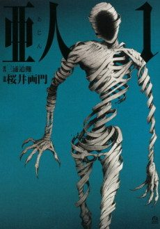

Anime
Anime
MangaAJIN: Demi-Human
亜人
After the anime, read the manga from Chapter 22.
7.1AniList
—Animeter
26 ep2 seasons
Anime finished. Where does the manga pick up?
Start at Chapter22
Season 2 loosely covers events up to around Chapter 69 but is mostly an anime-original plot. Start from Chapter 22 to get the canon story the anime changed.